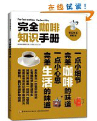

咖啡技术查看更多 >>
- 冠军咖啡师操作方法分享[06-03]
- 喝咖啡居然还有讲究？原来这样喝更健康[06-03]
- 杭州市内及周边---咖啡机维修 黄先..[06-03]
- 中国首个咖啡检测重点实验室开工建设[06-03]
- Carioca西爱西，巴西顶级咖啡的代表[06-03]
- Carioca西爱西带你细数那些迷人异域...[06-03]
- 咖啡中所含的咖啡因对人体的好处[06-03]
咖啡文化查看更多 >>
- 冠军咖啡师操作方法分享[06-03]
- 喝咖啡居然还有讲究？原来这样喝更健康[06-03]
- 杭州市内及周边---咖啡机维修 黄先..[06-03]
- 咖啡中所含的咖啡因对人体的好处[06-03]
- Carioca西爱西，巴西顶级咖啡的代表[06-03]
咖啡活动查看更多 >>
- 冠军咖啡师操作方法分享[06-03]
- 喝咖啡居然还有讲究？原来这样喝更健康[06-03]
- 杭州市内及周边---咖啡机维修 黄先..[06-03]
- 咖啡中所含的咖啡因对人体的好处[06-03]
- Carioca西爱西，巴西顶级咖啡的代表[06-03]
咖啡美食查看更多 >>
咖啡杂志

中国咖啡网杂志_1期